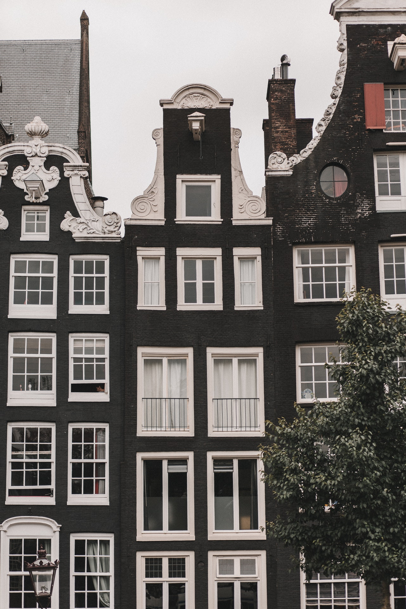
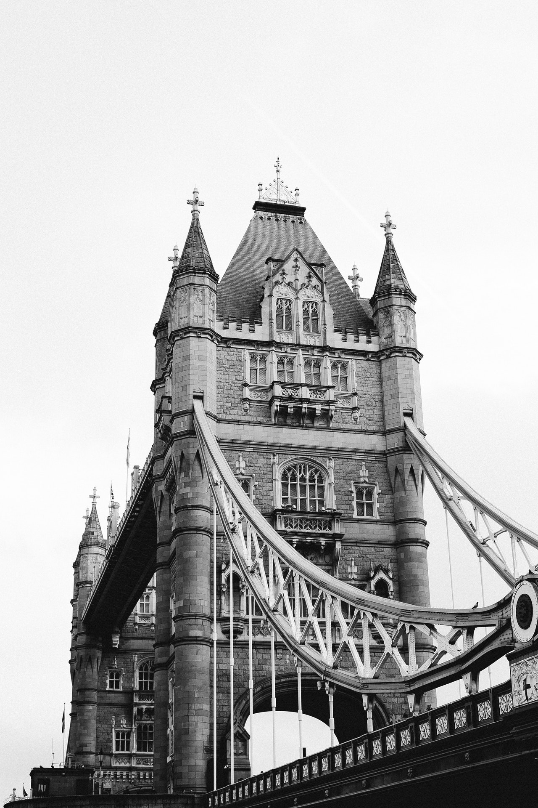
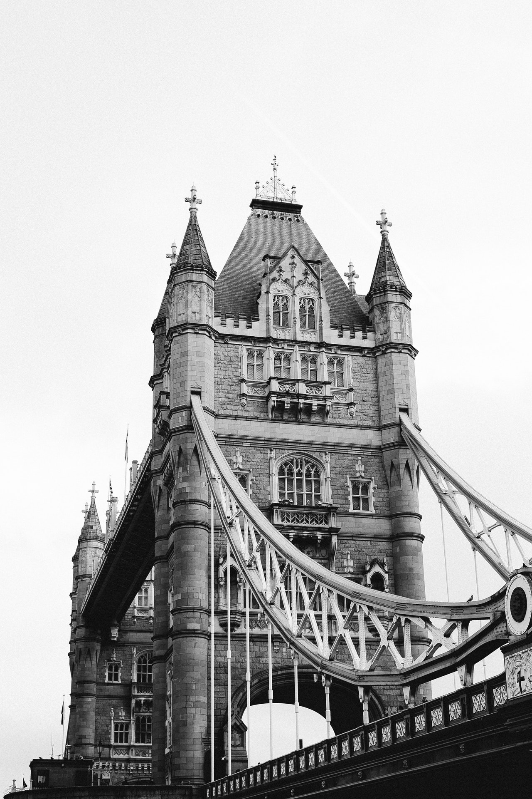
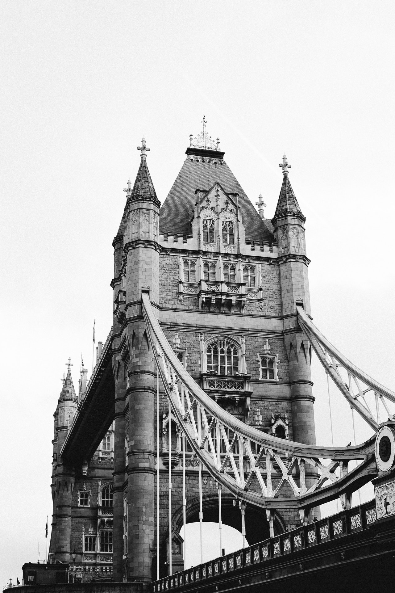

Stilul Victorian
Toata lumea a auzit despre acest gen, este originar de la mijlocul secolului XIX si se refera la regina Victoria. Nu exista caracteristici specifice ale cladirilor, deoarece este influentata de stilurile de design europene, din Orientul Mijlociu si Asia. Cu toate acestea, este caracteristica folosirea caramizilor rosii. Culorile predominante pentru exterior sunt maro si rosu, dar puteti gasi cladiri victoriene cu alte culori. Mai ales stilul de design victorian reprezentat in Regatul Unit.

 

